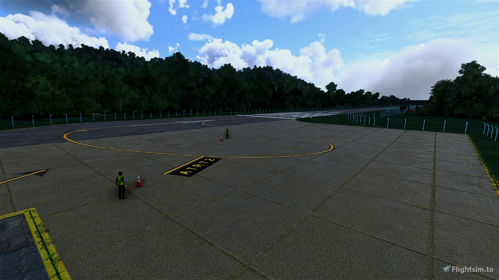

minute read
WMPR
Introduce
WMPR airport located on the beautiful Redang Island. The airport, which was briefly closed in 2009 for runway expansion The airport re-opened on April 16, 2009.
has been meticulously re-created PBR ground textures and added details from the expansion.
now serves as a popular destination for aviation enthusiasts and tourists alike. you can experience the realism and accuracy of the WMPR airport in a whole new way. So, come and check out this exciting new mods and experience the beauty of Redang Island for yourself!
has been meticulously re-created PBR ground textures and added details from the expansion.
now serves as a popular destination for aviation enthusiasts and tourists alike. you can experience the realism and accuracy of the WMPR airport in a whole new way. So, come and check out this exciting new mods and experience the beauty of Redang Island for yourself!
Screenshots
Version
1.0.0
Download
I